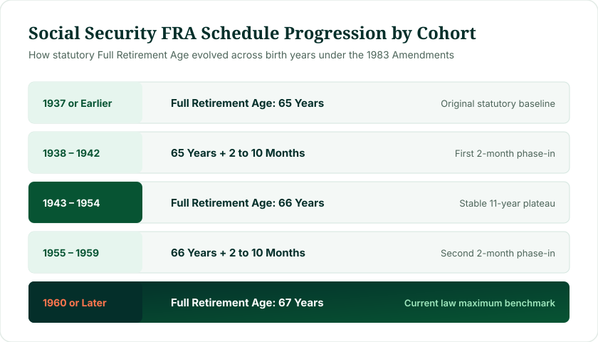
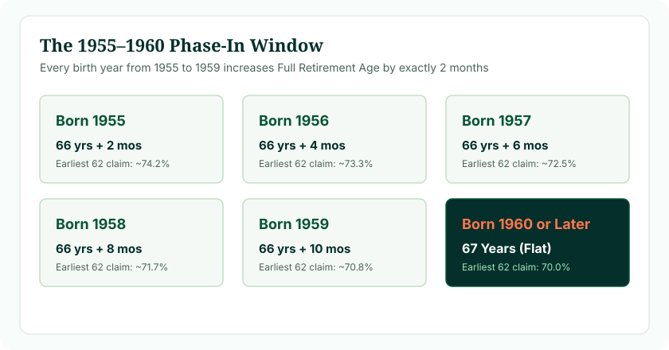

Your social security retirement age by birth year is the statutory benchmark establishing when you qualify for 100% of your earned benefit. If you were born in 1960 or later, your Full Retirement Age is 67. If you were born between 1943 and 1954, your FRA is 66. If you were born between 1955 and 1959, your FRA increases by 2 months per year (e.g., 66 years + 2 months for 1955 up to 66 years + 10 months for 1959).
Your social security retirement age by birth year is the primary legal mechanism governing your lifetime retirement benefits. Rather than using an arbitrary flat retirement threshold for every citizen, the federal government structures retirement eligibility around demographic birth tiers established by the 1983 Social Security Amendments. Understanding which birth cohort you belong to determines not only when you can claim unreduced checks, but also the severity of early claiming penalties and the magnitude of delayed credits.
1. Why Birth Year Dictates Social Security Full Retirement Age
When the Social Security Act was signed into law in 1935, age 65 was selected as the universal retirement age. At that time, life expectancy at birth in the United States was roughly 61 years, meaning only a fraction of workers lived long enough to collect retirement benefits for an extended period.
By the early 1980s, medical advancements, workplace safety regulations, and improved public health dramatically expanded adult longevity. The average 65-year-old was living well into their late 70s and 80s. Facing a long-term financing shortfall, the bipartisan Greenspan Commission recommended raising the Full Retirement Age gradually rather than slashing monthly checks across the board.
Under Title II of the Social Security Act (Section 216(l)), Congress established that the calendar year in which a person is born determines their statutory Full Retirement Age. This schedule has now fully transitioned: individuals born in 1960 or later have an FRA of 67, representing a full two-year increase over the original statutory baseline.
2. Official Social Security Retirement Age Schedule by Birth Year
The following table presents the complete statutory schedule used by the Social Security Administration. Locate your exact year of birth to see your Full Retirement Age and your earliest claiming reduction:
| Birth Year Cohort | Full Retirement Age (FRA) | Benefit at Age 62 (% of PIA) | Benefit at Age 70 (% of PIA) |
|---|---|---|---|
| 1937 or earlier | 65 years | 80.00% | 126.00% |
| 1938 | 65 years + 2 months | 79.17% | 126.50% |
| 1939 | 65 years + 4 months | 78.33% | 127.00% |
| 1940 | 65 years + 6 months | 77.50% | 127.50% |
| 1941 | 65 years + 8 months | 76.67% | 128.00% |
| 1942 | 65 years + 10 months | 75.83% | 128.50% |
| 1943–1954 | 66 years | 75.00% | 132.00% |
| 1955 | 66 years + 2 months | 74.17% | 130.67% |
| 1956 | 66 years + 4 months | 73.33% | 129.33% |
| 1957 | 66 years + 6 months | 72.50% | 128.00% |
| 1958 | 66 years + 8 months | 71.67% | 126.67% |
| 1959 | 66 years + 10 months | 70.83% | 125.33% |
| 1960 or later | 67 years | 70.00% | 124.00% |
Notice the relationship between birth year, claiming age, and percentage payouts: because individuals born in 1960 or later have a higher FRA (67), claiming early at 62 produces a larger permanent reduction (30%) compared to older generations whose FRA was 65 (20% reduction).
3. The Five Statutory Cohort Groupings
To visualize how statutory rules shifted across generations, the SSA schedule can be divided into five distinct generational cohorts:

Figure 1: Statutory evolution of Social Security Full Retirement Age across five birth cohorts.
1. The Baseline Cohort (Pre-1938)
Workers born in 1937 or earlier retained the historic baseline FRA of 65. Claiming at 62 meant a 20% permanent reduction.
2. The First Phase-In (1938–1942)
Lawmakers tested the phase-in mechanism by adding 2 months per year, moving the retirement age smoothly from 65 to 66.
3. The Stable Plateau (1943–1954)
For individuals born across this 11-year Baby Boomer span, FRA was locked flat at exactly 66 years. Claiming at 62 resulted in a 25% cut.
4. The Second Phase-In (1955–1959)
The second transition added 2 months per year from 66+2m to 66+10m, affecting workers reaching retirement age during the 2020s.
5. The Modern Standard Cohort (1960 or Later)
For everyone born in 1960 or later (including Gen X, Millennials, and Gen Z), Full Retirement Age is permanently 67 under current legislation. The maximum early reduction at age 62 is 30.0%.
4. The 1955–1960 Phase-In Window Breakdown
If you were born during the late 1950s, your Full Retirement Age is not an even year—it includes specific fractional months. Here is how each transition year is calculated:

Figure 2: Two-month annual increment structure affecting pre-retirees born between 1955 and 1960.
- Social Security Retirement Age 1955: 66 years and 2 months. Workers born in 1955 reached their milestone in early 2021/2022.
- Social Security Retirement Age 1956: 66 years and 4 months. Attainment occurred in 2022/2023.
- Social Security Retirement Age 1957: 66 years and 6 months. Attainment occurred in 2023/2024.
- Social Security Retirement Age 1958: 66 years and 8 months. Attainment falls in 2024/2025.
- Social Security Retirement Age 1959: 66 years and 10 months. Attainment occurs throughout 2025/2026.
- Social Security Retirement Age 1960+: Exactly 67 years flat. Attainment begins in 2027 and continues indefinitely.
5. What Your Birth Year Means for Early Claiming (Age 62)
While your Full Retirement Age changes based on birth year, age 62 remains the universal earliest claiming threshold for retirement benefits under Social Security rules.
However, the financial penalty for claiming early grows larger as the FRA rises. Early reduction formulas are statutory:
- First 36 Months Early: Benefit is reduced by 5/9 of 1% (about 0.555%) per month.
- Months Exceeding 36: Benefit is reduced by an additional 5/12 of 1% (about 0.417%) per month.
Because workers born in 1960 or later have an FRA of 67, claiming at 62 means claiming 60 months early (36 months at 5/9% + 24 months at 5/12% = 20% + 10% = 30% total lifetime reduction). In contrast, someone born in 1954 had an FRA of 66, meaning claiming at 62 was only 48 months early, resulting in a smaller 25% cut.
6. Delayed Retirement Credits (Age 70) by Birth Year
If you delay claiming benefits past your Full Retirement Age, the SSA credits you with Delayed Retirement Credits (DRCs) at a rate of 8% per year (two-thirds of 1% per month):
- For 1943–1954 Cohorts (FRA 66): Waiting until 70 yielded 4 full years of credits (4 × 8% = +32% increase over PIA).
- For 1960+ Cohorts (FRA 67): Waiting until 70 yields 3 full years of credits (3 × 8% = +24% increase over PIA).
Although the maximum delay percentage is slightly lower (+24% vs +32%) because there are only 3 years between 67 and 70, the financial power of delayed claiming remains substantial. A 1960-cohort worker claiming at 70 receives a monthly benefit that is ~77% higher than what they would receive if they claimed at 62 ($1,240 vs $700 for every $1,000 of PIA).
7. The Special January 1 Attainment Exception
One of the most important rules for birth-year calculations is codified in the Social Security Program Operations Manual System (POMS GN 00302.010). Under English common law adopted into federal administrative regulations, a person legally attains a given age on the day before their calendar birthday.
If your birth certificate reads January 1, 1960, the law treats you as having attained age 62, 66, and 67 on December 31, 1959. Consequently, for Full Retirement Age purposes, you are evaluated using the 1959 schedule (66 years + 10 months), rather than the 1960 schedule (67 years)!
Our online Social Security Age Calculator automatically applies this legal attainment rule, ensuring individuals born on January 1 get exact, compliant milestone dates.
8. How to Find Your Social Security Milestone Dates
To map your retirement milestones with absolute mathematical precision:
- Confirm Your Statutory Year: Take your birth year (subtract 1 if born on January 1).
- Look Up Your FRA Months: Determine whether you require flat years or additional months.
- Add Months to Calendar Date: Project forward from your birth date by adding the full age milestone.
- Account for Benefit Payment Timing: Social Security payments are distributed one month in arrears on the second, third, or fourth Wednesday of the month, based on your birth day of the month (1st–10th on 2nd Wednesday; 11th–20th on 3rd Wednesday; 21st–31st on 4th Wednesday).
9. Practical Worked Scenarios Across Generations
Review how the birth-year rules function across representative individuals:
Scenario A: Baby Boomer Born October 12, 1953
Birth Cohort: 1943–1954.
Statutory FRA: 66 years flat.
Milestone Attainment: October 12, 2019. At age 66, this individual achieved 100% PIA benefits without earnings test penalties.
Scenario B: Transition Cohort Born May 4, 1958
Birth Cohort: 1958 phase-in tier.
Statutory FRA: 66 years and 8 months.
Milestone Attainment: January 4, 2025. Claiming at 62 in May 2020 resulted in a 28.33% reduction. Reaching FRA in January 2025 unlocked full entitlement.
Scenario C: Modern Worker Born September 25, 1965
Birth Cohort: 1960 or later.
Statutory FRA: 67 years flat.
Milestones: Age 62 on September 25, 2027 (70% benefit); FRA 67 on September 25, 2032 (100% benefit); Age 70 on September 25, 2035 (124% benefit).
10. Full Retirement Age vs Personal Retirement Date
Remember: your Full Retirement Age is not your mandatory retirement date. You have complete legal freedom to retire from work whenever you choose, independent of your Social Security claiming date:
- Stop Working Early, Claim Later: You can retire from your job at 60 and bridge the gap with personal savings, waiting until 67 or 70 to claim maximum Social Security.
- Claim Early, Continue Working: You can claim at 62 and continue working, though you will be subject to the Retirement Earnings Test until you reach your FRA.
- Work Past FRA: You can continue working well into your 70s. Once you hit FRA, earnings test limits disappear, and additional high-earning years may even increase your PIA calculation!
11. Medicare Eligibility Remains Fixed at Age 65
Do not confuse your Social Security retirement age by birth year with your Medicare eligibility. Medicare eligibility remains age 65, regardless of whether your Social Security Full Retirement Age is 66, 66 and 10 months, or 67.
If you plan to delay Social Security until age 67 or 70, you must still remember to sign up for Medicare Part A and Part B at age 65 during your 7-month Initial Enrollment Period (unless covered by an active, employer-provided group health plan). Automatic enrollment only happens if you are already receiving Social Security checks.
12. Frequently Asked Questions
How is Social Security retirement age determined by birth year?
The Social Security Administration uses the year you were born to determine your Full Retirement Age (FRA). Under federal statutory amendments, FRA ranges from 65 for those born in 1937 or earlier up to 67 for those born in 1960 or later.
What is the retirement age for someone born in 1957?
For someone born in 1957, Full Retirement Age is 66 years and 6 months.
What is the retirement age for someone born in 1958?
For individuals born in 1958, Full Retirement Age is 66 years and 8 months.
What is the retirement age for someone born in 1959?
For individuals born in 1959, Full Retirement Age is 66 years and 10 months.
What is the retirement age for someone born in 1960 or later?
For anyone born in 1960 or later, Full Retirement Age is 67 years.
Can I still claim Social Security at 62 regardless of birth year?
Yes. Age 62 remains the universal earliest eligibility age for retirement benefits across all birth years. However, the percentage reduction applied at 62 is steeper for cohorts with higher FRAs (a 30% cut for FRA 67 versus 20% for FRA 65).
Does delaying past FRA increase benefits for all birth years?
Yes. Delayed Retirement Credits (DRCs) add 8% per year (two-thirds of 1% per month) to your monthly benefit for every month you delay claiming past your FRA, up until age 70.
Why did Social Security Full Retirement Age increase to 67?
Congress passed the 1983 Social Security Amendments to ensure long-term program solvency as American life expectancies increased and the ratio of workers to retirees shifted.
What is the January 1 birth date exception?
Under SSA regulations (POMS GN 00302.010), a person attains their age on the day before their birthday. Therefore, if you were born on January 1, you use the statutory schedule for the prior birth year.
Does Medicare eligibility change by birth year?
No. Medicare eligibility remains fixed at age 65 for all eligible Americans, regardless of your Social Security Full Retirement Age.
15. Reviewed & Methodology
This guide analyzes Social Security retirement ages using the official statutory schedule codified under Title II of the Social Security Act (42 U.S.C. § 416(l)).
- Statutory Reference: Social Security Act Section 216(l); 20 C.F.R. § 404.409; SSA POMS GN 00302.010.
- Cohort Classification: Calculations strictly follow federal birth-year cohorts, reflecting common-law legal age attainment on the day prior to birth for January 1 births.
- Disclaimer: This content is educational in nature and does not constitute individual financial, legal, or tax advice. Contact the Social Security Administration or a licensed financial professional for personal benefit determinations.
- Last Editorial Review: October 2026 by Navjeet Kamboj.